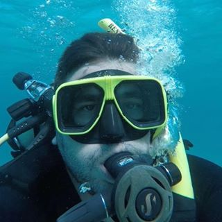

About Me

I am a curious person that is always trying to learn new hobbies and understand the world.
I am multi-lingual and speak 2 languages fluently (English and Spanish) and plan on learning more French,
Italian, and Portuguese.
I studied abroad in Spain back in 2014 for six months. It was the best experience in my entire life.
In the past year, I have traveled abroad, gotten certified in scuba diving, and learned how to knit.
My favorite hobbies are surfing, scuba diving, traveling, and meeting new people.
In addition, I plan on learning how to build websites, mobile apps, programs, and translating them as well.
I hope you enjoyed reading my "About Me" section.